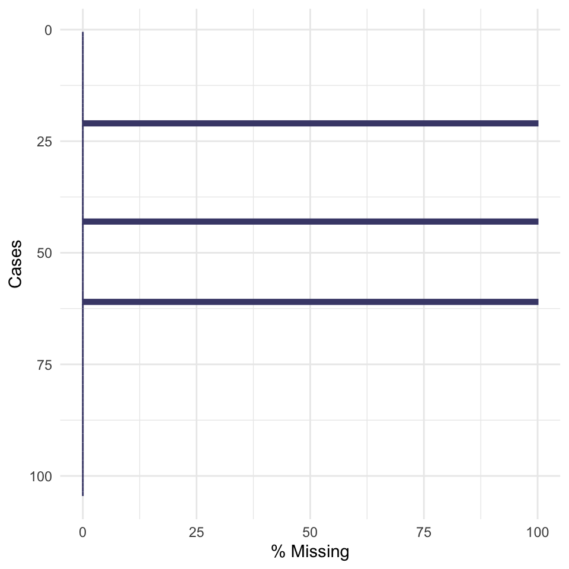

| ub_01 ~ Ich trenne Müll |
| ub_02 ~ Ich stecke nicht-benutzte Elektrogeräte aus |
| ub_03 ~ Ich nutze Strom aus erneuerbaren Energien |
| ub_04 ~ Ich nutze den ÖPNV |
| ub_05 ~ Ich schalte das Licht in nicht-genutzten Räumen aus |
| ub_06 ~ Ich achte beim Einkauf von Elektrogeräten auf Umweltsiegel |
| ub_07 ~ Wenn ich lüfte, mache ich die Heizung aus |
| ub_08 ~ Ich fahre sprit-sparend Auto |
| ub_09 ~ Ich achte beim Klamottenkauf auf kurze Lieferwege |
| ub_10 ~ Ich verkaufe/spende/ verschenke gebrauchte Gegenstände |
| ub_11 ~ Ich beschreibe Vorder- und Rückseite eines Blattes |
| ub_12 ~ Ich benutze Einmal-Hygiene Artikel |
| ub_13 ~ Bei Kurzstrecken laufe ich |
| ub_14 ~ Ich esse Fleisch |
| ub_15 ~ Ich kaufe regionale Lebensmittel |
| ub_16 ~ Ich kaufe unverpackte Lebensmittel |
| ub_17 ~ Ich werfe Lebensmittel weg |
| ub_18 ~ Ich kaufe Second-Hand-Kleidung |
| ub_19 ~ Ich achte beim Kauf von Hygieneartikeln auf biologisch abbaubare Inhaltsstoffe |
| ub_20 ~ Ich verzichte auf tierische Produkte |
| ub_21 ~ Ich nehme an Food-Sharing-Projekten teil |
| ub_22 ~ Ich lasse beim Spülen das Wasser laufen |
| ub_23 ~ An öffentlichen Orten hinterlasse ich Müll |
| ub_24 ~ Ich benutze wieder-verwendbare Behältnisse |
| ub_25 ~ Ich bewege mich bei Kurstrecken mit dem Fahrrad fort |
| ub_26 ~ Ich fliege Kurzstrecken |
| ub_27 ~ Ich esse Fleisch aus Massentierhaltung |
| ub_28 ~ Ich kaufe Second-Hand-Möbel |
| ub_29 ~ Ich fliege in den Urlaub |
1 Itemanalyse
Abstract
In dem Modul Grundlagen der Diagnostik (PsyBSc8) lernt ihr im Seminar ein psychologisches Testverfahren zu erstellen und empirisch zu überprüfen. In diesem Zusammenhang führen viele von euch wahrscheinlich das erste Mal eine Itemanalyse und eine Exploratorische Faktorenanalyse (EFA) durch. Hier könnt ihr noch einmal in aller Ruhe nachlesen, was euch im Praktikum schon einmal vorgeführt wurde.
1.1 Einleitung
Im Rahmen dieses Tutorials zur Itemanalyse verwenden wir echte Daten aus einem im vergangenen Semester konstruierten Fragebogen zu Umweltbewusstsein, welcher die Einstellung von Personen gegenüber dem Umweltschutz misst. Spezifisch wurde dieses Konstrukt auf Verhaltensebene operationalisiert, wobei mehr oder weniger umweltschützende Verhaltensweisen als Indikator für das Ausmaß des umweltbewussten Handelns betrachtet werden. Neben den 29 Items der Rohfassung des Fragebogens enthält der Datensatz zusätzlich demographische Informationen über das Alter, Geschlecht, Wohnsituation sowie Bildungsgrad der 104 teilnehmenden Personen. In der folgenden Tabelle erhaltet ihr eine Übersicht über die Items des Konstrukts.
1.2 Einlesen der Daten
Der Datensatz ist in diesem Fall als .rds-Datei gespeichert und kann mittels der Funktion (readRDS()) eingelesen werden.
Information zum Einlesen von Daten
Wenn ihr euren Datensatz aus SoSci-Survey herunterladet, wird dieser in einem anderen Format gespeichert sein (typischerweise entweder .csv, oder .xlsx). Um csv-Dateien (mit entweder -Komma, -Semikolon oder Tab-Separator) einzulesen, können entweder Base-R Funktionen (read.csv(), read.csv2() bzw. read.delim()) oder z.B. Funktionen des readr-Packages aus der Familie des tidyverse genutzt werden (read_csv(), read_csv2() und read_tsv()). Um Excel-Dateien einlesen zu können, kann das readxl-Package genutzt werden (read_excel())
Ihr habt die Möglichkeit, den Datensatz entweder lokal von euren Computer einzulesen oder alternativ einen Permalink aus dem dazugehörigen GitHub-Repository zu verwenden (dafür ist natürlich eine Internetverbindung erforderlich).
Ladet den Datensatz aus OLAT herunter und stellt euer Working Directory richtig ein (setwd()). Danach kann der Datensatz folgendermaßen eingelesen werden readRDS("data_ub_raw.rds"). Alternativ wäre eine allgemeine Empfehlung R-Projects zu nutzen, dann müsst ihr nicht mehr euer Working Directory einstellen und könnt relative Dateipfade nutzen readRDS("path/to/data/data_ub_raw.rds"). Wer daran interessiert ist, findet unter diesem Link weitere Ressourcen.
library(here) # Bei Nutzung von R-Projects zur Nutzung von relativen Pfaden (statt setwd())here() starts at /Users/luca/PowerFolders/Hiwi_Arbeit/DPPD/PsyBSc8_Diagnostik_WS2324data_raw <- readRDS(here::here("data/raw/data_ub_raw.rds"))Durch Verwendung eines Permalinks können die Daten direkt von GitHub abgerufen werden. Dazu muss lediglich der Link als String in die Funktion url() eingegeben werden und kann anschließend wie gewohnt eingelesen werden.
permalink <- "https://github.com/jlschnatz/PsyBSc8_Diagnostik_WS2324/raw/95ba618424d0465f7e0bfea4cc5ac840d82ad74e/data/raw/data_ub_raw.rds"
if (curl::has_internet()) {
data_raw <- readRDS(url(permalink))
}Wir laden den gesamten Datensatz und speichern zudem ein Subset des Datensatzes, welches nur die Items zu Umweltbewusstsein enthält. Hilfreiche Funktionen, um einen ersten Überblick zu erhalten, sind zum Beispiel skim() oder str().
library(dplyr) # Datenmanipulation
library(skimr) # Hilfreich für Überblick von Dataframes
data_item <- data_raw %>% dplyr::select(ub_01:ub_29) # oder select(starts_with("ub_"))
data_item <- subset(data_raw, select = ub_01:ub_29) # Alternative
# Überblick über den Datensatz
skimr::skim(data_raw)| Name | data_raw |
| Number of rows | 104 |
| Number of columns | 35 |
| _______________________ | |
| Column type frequency: | |
| factor | 5 |
| numeric | 30 |
| ________________________ | |
| Group variables | None |
Variable type: factor
| skim_variable | n_missing | complete_rate | ordered | n_unique | top_counts |
|---|---|---|---|---|---|
| id_case | 0 | 1.00 | FALSE | 104 | 63: 1, 64: 1, 67: 1, 70: 1 |
| dd_sex | 3 | 0.97 | FALSE | 2 | Wei: 67, Män: 34, Div: 0 |
| dd_wohn1 | 3 | 0.97 | FALSE | 4 | Mit: 36, Mit: 28, In : 19, All: 18 |
| dd_wohn2 | 3 | 0.97 | FALSE | 4 | Stä: 40, Län: 27, Ehe: 21, Ehe: 13 |
| dd_bildung | 3 | 0.97 | FALSE | 5 | Abi: 44, Hoc: 26, Ber: 17, Rea: 11 |
Variable type: numeric
| skim_variable | n_missing | complete_rate | mean | sd | p0 | p25 | p50 | p75 | p100 | hist |
|---|---|---|---|---|---|---|---|---|---|---|
| dd_alter | 3 | 0.97 | 31.27 | 15.12 | 14 | 20 | 24 | 43 | 81 | ▇▂▂▂▁ |
| ub_01 | 3 | 0.97 | 4.09 | 0.86 | 0 | 4 | 4 | 5 | 5 | ▁▁▁▇▃ |
| ub_02 | 3 | 0.97 | 2.50 | 1.38 | 0 | 1 | 2 | 4 | 5 | ▇▅▃▆▂ |
| ub_03 | 3 | 0.97 | 2.29 | 1.34 | 0 | 1 | 2 | 3 | 5 | ▆▇▆▂▂ |
| ub_04 | 3 | 0.97 | 2.56 | 1.68 | 0 | 1 | 3 | 4 | 5 | ▇▃▅▅▃ |
| ub_05 | 3 | 0.97 | 4.33 | 0.81 | 0 | 4 | 4 | 5 | 5 | ▁▁▂▇▇ |
| ub_06 | 3 | 0.97 | 2.69 | 1.62 | 0 | 1 | 3 | 4 | 5 | ▇▃▆▅▅ |
| ub_07 | 3 | 0.97 | 3.26 | 1.84 | 0 | 2 | 4 | 5 | 5 | ▆▂▂▆▇ |
| ub_08 | 3 | 0.97 | 3.00 | 1.51 | 0 | 2 | 3 | 4 | 5 | ▆▆▆▇▆ |
| ub_09 | 3 | 0.97 | 1.45 | 1.28 | 0 | 1 | 1 | 2 | 5 | ▇▃▂▁▁ |
| ub_10 | 3 | 0.97 | 2.99 | 1.36 | 0 | 2 | 3 | 4 | 5 | ▃▇▇▇▅ |
| ub_11 | 3 | 0.97 | 3.38 | 1.37 | 0 | 3 | 4 | 4 | 5 | ▃▅▇▇▇ |
| ub_12 | 3 | 0.97 | 2.22 | 1.40 | 0 | 1 | 2 | 3 | 5 | ▇▇▆▂▂ |
| ub_13 | 3 | 0.97 | 3.66 | 1.28 | 0 | 3 | 4 | 5 | 5 | ▂▂▆▆▇ |
| ub_14 | 3 | 0.97 | 2.05 | 1.40 | 0 | 1 | 2 | 3 | 5 | ▇▆▇▂▁ |
| ub_15 | 3 | 0.97 | 2.86 | 0.74 | 1 | 2 | 3 | 3 | 5 | ▁▃▇▂▁ |
| ub_16 | 3 | 0.97 | 2.29 | 0.86 | 0 | 2 | 2 | 3 | 4 | ▁▃▇▇▁ |
| ub_17 | 3 | 0.97 | 3.44 | 0.68 | 2 | 3 | 3 | 4 | 5 | ▂▇▁▇▁ |
| ub_18 | 3 | 0.97 | 1.18 | 1.15 | 0 | 0 | 1 | 2 | 4 | ▇▇▃▂▁ |
| ub_19 | 3 | 0.97 | 2.19 | 1.47 | 0 | 1 | 2 | 3 | 5 | ▇▅▅▂▂ |
| ub_20 | 3 | 0.97 | 2.00 | 1.43 | 0 | 1 | 2 | 3 | 5 | ▇▆▃▁▂ |
| ub_21 | 3 | 0.97 | 0.51 | 0.89 | 0 | 0 | 0 | 1 | 3 | ▇▂▁▂▁ |
| ub_22 | 3 | 0.97 | 1.21 | 1.24 | 0 | 0 | 1 | 2 | 5 | ▇▃▁▁▁ |
| ub_23 | 3 | 0.97 | 3.12 | 0.35 | 3 | 3 | 3 | 3 | 5 | ▇▁▁▁▁ |
| ub_24 | 3 | 0.97 | 3.78 | 0.93 | 0 | 3 | 4 | 4 | 5 | ▁▁▅▇▃ |
| ub_25 | 3 | 0.97 | 2.20 | 1.65 | 0 | 1 | 2 | 3 | 5 | ▇▆▅▂▃ |
| ub_26 | 3 | 0.97 | 0.33 | 0.81 | 0 | 0 | 0 | 0 | 5 | ▇▁▁▁▁ |
| ub_27 | 3 | 0.97 | 1.27 | 1.19 | 0 | 0 | 1 | 2 | 5 | ▇▃▁▁▁ |
| ub_28 | 3 | 0.97 | 1.17 | 1.18 | 0 | 0 | 1 | 2 | 4 | ▇▆▅▂▁ |
| ub_29 | 3 | 0.97 | 1.58 | 1.13 | 0 | 1 | 2 | 2 | 5 | ▇▆▂▁▁ |
Bevor wir mit der deskriptiven Analyse beginnen, sollten wir noch überprüfen, ob es fehlende Werte (NAs) im Datensatz gibt.
anyNA(data_item)[1] TRUEsum(is.na(data_item)) # Alternative[1] 87In diesem Fall sind 87 fehlende Werte vorhanden. Um die fehlenden Werte genauer zu explorieren, sollte am Rande das naniar-Package erwähnt werden, da es einige nützliche Funktionen diesbezüglich enthält. Wir können zum Beispiel über die cases (Proband:innen) hinweg die prozentuale Häufigkeit an Missings visualisieren.
naniar::gg_miss_case(data_item, show_pct = TRUE, order_cases = FALSE)
Wir sehen, dass drei Proband:innen den kompletten Fragebogen nicht ausgefüllt haben, weswegen mit der Funktion na.omit() ausgeschlossen werden.
Disclaimer zu fehlenden Werten
Es sollte zumindest am Rande erwähnt werden, dass die Funktion na.omit() sehr mächtig ist und nur mit Vorsicht verwendet werden sollte. Ohne weitere Überlegungen NAs auszuschließen, deren Fehlen möglicherweise nicht zufällig ist, sondern durch andere (nicht)-erhobene Variablen bedingt sind, kann zu Verzerrungen führen. Im Zweifel sprecht ihr euch am besten mit eurer/eurem Dozent:in ab, wie ihr mit fehlenden Werten umgehen sollt. Falls ihr euch mehr mit dem Thema NAs auseinandersetzen wollt, hier ein spannender Blogpost.
data_item <- na.omit(data_item)
anyNA(data_item)[1] FALSE1.3 Deskriptive Analyse
Bevor wir die Itemanalyse durchführen, wollen wir uns zunächst ein wenig mit den Daten vertraut machen. Hierfür benötigen wir zwei Packages: Das psych-Package beinhaltet sehr viele Funktionen und Befehle, die auch für viele andere Analysen hilfreich sind. Das Package janitor ist eine bessere Alternative zum Basis-Befehl table() und ist besonders informativ bei Häufigkeitstabellen.
Tipp für die Präsentationen & Hausarbeit
Für die Abschlussberichte, braucht ihr die ganzen deskriptiven Informationen in APA7 formatierten Tabellen. Hierfür eignet sich besonders das Package sjPlot. Als Beispiel speichern wir zunächst die die vorherige deskriptive Statistik aller Items als ein Objekt ab. Danach erstellen wir mit einer Funktion des genannten Packages eine schön formatierte Tabelle. Die erstellte Tabelle kann sogar direkt als Word-Dokument abgespeichert werden, um danach noch weiter angepasst zu werden (z.B. Erstellen von Fußnoten, Tabellen-Titel, etc.). Wichtig dabei ist, dass nur die Endung .doc und nicht .docx funktioniert.
Für die Berechnung deskriptiver Kennwerte (Mittelwert, Standardabweichung, Median, etc.) können wir die describe() Funktion des psych-Packages verwenden:
library(psych)
library(sjPlot)
descr_data_item <- psych::describe(data_item)
sjPlot::tab_df(
x = descr_data_item,
show.rownames = TRUE,
#file = table_descr_item.doc # Speichern als .doc Datei
)| Row | vars | n | mean | sd | median | trimmed | mad | min | max | range | skew | kurtosis | se |
| ub_01 | 1 | 101 | 4.09 | 0.86 | 4 | 4.21 | 0.00 | 0 | 5 | 5 | -2.21 | 8.27 | 0.09 |
| ub_02 | 2 | 101 | 2.50 | 1.38 | 2 | 2.46 | 1.48 | 0 | 5 | 5 | 0.13 | -1.27 | 0.14 |
| ub_03 | 3 | 101 | 2.29 | 1.34 | 2 | 2.26 | 1.48 | 0 | 5 | 5 | 0.23 | -0.46 | 0.13 |
| ub_04 | 4 | 101 | 2.56 | 1.68 | 3 | 2.58 | 1.48 | 0 | 5 | 5 | -0.05 | -1.29 | 0.17 |
| ub_05 | 5 | 101 | 4.33 | 0.81 | 4 | 4.46 | 1.48 | 0 | 5 | 5 | -1.86 | 6.44 | 0.08 |
| ub_06 | 6 | 101 | 2.69 | 1.62 | 3 | 2.74 | 1.48 | 0 | 5 | 5 | -0.11 | -1.22 | 0.16 |
| ub_07 | 7 | 101 | 3.26 | 1.84 | 4 | 3.44 | 1.48 | 0 | 5 | 5 | -0.70 | -1.04 | 0.18 |
| ub_08 | 8 | 101 | 3.00 | 1.51 | 3 | 3.10 | 1.48 | 0 | 5 | 5 | -0.41 | -0.83 | 0.15 |
| ub_09 | 9 | 101 | 1.45 | 1.28 | 1 | 1.30 | 1.48 | 0 | 5 | 5 | 0.93 | 0.52 | 0.13 |
| ub_10 | 10 | 101 | 2.99 | 1.36 | 3 | 3.06 | 1.48 | 0 | 5 | 5 | -0.34 | -0.50 | 0.14 |
| ub_11 | 11 | 101 | 3.38 | 1.37 | 4 | 3.52 | 1.48 | 0 | 5 | 5 | -0.62 | -0.35 | 0.14 |
| ub_12 | 12 | 101 | 2.22 | 1.40 | 2 | 2.16 | 1.48 | 0 | 5 | 5 | 0.27 | -0.48 | 0.14 |
| ub_13 | 13 | 101 | 3.66 | 1.28 | 4 | 3.81 | 1.48 | 0 | 5 | 5 | -0.85 | 0.24 | 0.13 |
| ub_14 | 14 | 101 | 2.05 | 1.40 | 2 | 2.01 | 1.48 | 0 | 5 | 5 | -0.04 | -0.84 | 0.14 |
| ub_15 | 15 | 101 | 2.86 | 0.74 | 3 | 2.83 | 0.00 | 1 | 5 | 4 | 0.22 | 0.48 | 0.07 |
| ub_16 | 16 | 101 | 2.29 | 0.86 | 2 | 2.32 | 1.48 | 0 | 4 | 4 | -0.30 | -0.30 | 0.09 |
| ub_17 | 17 | 101 | 3.44 | 0.68 | 3 | 3.48 | 1.48 | 2 | 5 | 3 | -0.23 | -0.37 | 0.07 |
| ub_18 | 18 | 101 | 1.18 | 1.15 | 1 | 1.02 | 1.48 | 0 | 4 | 4 | 0.90 | 0.03 | 0.11 |
| ub_19 | 19 | 101 | 2.19 | 1.47 | 2 | 2.14 | 1.48 | 0 | 5 | 5 | 0.23 | -0.89 | 0.15 |
| ub_20 | 20 | 101 | 2.00 | 1.43 | 2 | 1.90 | 1.48 | 0 | 5 | 5 | 0.43 | -0.49 | 0.14 |
| ub_21 | 21 | 101 | 0.51 | 0.89 | 0 | 0.33 | 0.00 | 0 | 3 | 3 | 1.51 | 1.02 | 0.09 |
| ub_22 | 22 | 101 | 1.21 | 1.24 | 1 | 1.02 | 1.48 | 0 | 5 | 5 | 0.93 | 0.24 | 0.12 |
| ub_23 | 23 | 101 | 3.12 | 0.35 | 3 | 3.01 | 0.00 | 3 | 5 | 2 | 2.96 | 8.63 | 0.04 |
| ub_24 | 24 | 101 | 3.78 | 0.93 | 4 | 3.85 | 1.48 | 0 | 5 | 5 | -0.80 | 1.34 | 0.09 |
| ub_25 | 25 | 101 | 2.20 | 1.65 | 2 | 2.12 | 1.48 | 0 | 5 | 5 | 0.22 | -1.05 | 0.16 |
| ub_26 | 26 | 101 | 0.33 | 0.81 | 0 | 0.14 | 0.00 | 0 | 5 | 5 | 3.43 | 13.66 | 0.08 |
| ub_27 | 27 | 101 | 1.27 | 1.19 | 1 | 1.12 | 1.48 | 0 | 5 | 5 | 0.96 | 0.95 | 0.12 |
| ub_28 | 28 | 101 | 1.17 | 1.18 | 1 | 1.02 | 1.48 | 0 | 4 | 4 | 0.74 | -0.38 | 0.12 |
| ub_29 | 29 | 101 | 1.58 | 1.13 | 2 | 1.51 | 1.48 | 0 | 5 | 5 | 0.73 | 0.79 | 0.11 |
Wenn wir nur eine spezifische Variable deskriptiv betrachten wollen (z.B. dd_alter), kann in der gleichen Funktion die Variable direkt angesteuert werden.
descr_age <- psych::describe(data_raw$dd_alter)
sjPlot::tab_df(descr_age)| vars | n | mean | sd | median | trimmed | mad | min | max | range | skew | kurtosis | se |
| 1 | 101 | 31.27 | 15.12 | 24 | 29.28 | 7.41 | 14 | 81 | 67 | 1.07 | -0.02 | 1.50 |
Für alle kategoriellen Daten (z.B. Geschlecht, Wohnort, Bildung) benötigen keine Mittelwerte oder Standardabweichungen, sondern nutzen Häufigkeitsverteilung zur deskriptiven Beschreibung. Hier kommt jetzt das janitor-Package zum Einsatz.
library(janitor)
descr_sex <- tabyl(data_raw$dd_sex, show_na = FALSE)
tab_df(descr_sex)| data_raw.dd_sex | n | percent |
| Männlich | 34 | 0.34 |
| Weiblich | 67 | 0.66 |
| Divers | 0 | 0.00 |
Wir bekommen die relativen und absoluten Häufigkeiten für männliche und weibliche Probanden ausgegeben. Falls es fehlenden Werte gäbe, müssten diese im Bericht auch angegeben werden. Dies ist ebenfalls mit der gleichen Funktion durch die Spezifizierung eines zusätzlichen Arguments möglich.
descr_sex_na <- tabyl(data_raw$dd_sex, show_na = TRUE)
tab_df(descr_sex_na)| data_raw.dd_sex | n | percent | valid_percent |
| Männlich | 34 | 0.33 | 0.34 |
| Weiblich | 67 | 0.64 | 0.66 |
| Divers | 0 | 0.00 | 0.00 |
| NA | 3 | 0.03 | NA |
Zudem können wir mit dem psych-Package auch eine Tabelle nach Gruppen erstellen. Dieser Output kann dann mit einer ähnlichen Funktion des sjPlot-Package in einer Tabelle dargestellt werden.
descr_age_by_sex <- describeBy(
x = data_raw$dd_alter, group = droplevels(data_raw$dd_sex) # Nicht angegebenes Level (Divers) des Faktors entfernen
)
tab_dfs(
x = descr_age_by_sex,
titles = c("Männlich","Weiblich")
)| vars | n | mean | sd | median | trimmed | mad | min | max | range | skew | kurtosis | se |
| 1 | 34 | 26.65 | 10.20 | 23.50 | 24.93 | 4.45 | 14 | 58 | 44 | 1.72 | 2.57 | 1.75 |
| vars | n | mean | sd | median | trimmed | mad | min | max | range | skew | kurtosis | se |
| 1 | 67 | 33.61 | 16.67 | 25 | 32 | 8.90 | 14 | 81 | 67 | 0.75 | -0.76 | 2.04 |
Es gibt auch die Möglichkeit mehrere Tabellen in ein Dokument zu packen und diese in einem Word-Dokument zu speichern:
tab_dfs(
x = list(descr_age, descr_sex_na),
titles = c("Descriptives of Age", "Descriptives of Sex")
)| vars | n | mean | sd | median | trimmed | mad | min | max | range | skew | kurtosis | se |
| 1 | 101 | 31.27 | 15.12 | 24 | 29.28 | 7.41 | 14 | 81 | 67 | 1.07 | -0.02 | 1.50 |
| data_raw$dd_sex | n | percent | valid_percent |
| Männlich | 34 | 0.33 | 0.34 |
| Weiblich | 67 | 0.64 | 0.66 |
| Divers | 0 | 0.00 | 0.00 |
| NA | 3 | 0.03 | NA |
tab_dfs(
x = list(descr_age, descr_sex),
titles = c("Descriptives of Age","Descriptives of Sex"),
file = "descriptives_all.doc" # wieder als .doc abspeichern
)1.4 Itemanalyse
1.4.1 Rekodierung inverser Items
Für die Itemanalyse benötigen wir den Datensatz in denen nur die Items vorhanden sind. Diesen haben wir bereits in einem vorherigen Schritt erstellt. Bevor wir die Itemanalyse jedoch durchführen, müssen wir alle Items, die inverse kodiert sind rekodieren.
Rekodierung leicht gemacht!
Dafür speichern wir alle inversen Items zunächst in einem Vektor ab. Anschließend verwenden wir die mutate() Funktion des dplyr-Package, mit welcher wir Variablen manupulieren/verändern können. Wir müssen dabei den Zusatz across() hinzunehmen, da wir mehreren Variablen gleichzeitig verändern wollen. Das Argument .cols gibt dabei an, welche Variablen wir verändern wollen. Mit dem Argument .fns spezifizieren wir, welche Funktion wir auf die Variablen anwenden wollen. Wir verwenden die Funktion rec() aus dem sjmisc-Package. Die etwas ungewöhnliche Schreibweise mit der Tilde ~und dem .x setzt sich wie folgt zusammen: Die Tilde müssen wir immer dann verwenden, wenn wir bei der Funktion, die wir anwenden zusätzlich Argumente spezifizieren (rec = "rev"). Das .x verwenden wir als Platzhalter für alle Variablen, die wir verändern wollen. Schließlich können wir mit dem .names Argument einen Namen für alle veränderten Variablen spezifizieren. Das Prefix {col} steht dabei für den ursprünglichen Variablenname. Mit dem Zusatz {col_r} wird hängen wir dem Präfix noch ein Suffix an. Das Suffix kennzeichnet dabei, dass wir die Items rekodiert haben.
library(sjmisc)
inverse_items <- paste0("ub_", c(12, 14, 17, 22, 23, 26, 27, 29))
data_item_rec <- data_item %>%
mutate(across(
.cols = all_of(inverse_items),
.fns = ~sjmisc::rec(.x, rec = "rev"),
.names = "{.col}_r"
)) %>%
select(-all_of(inverse_items))
colnames(data_item_rec) [1] "ub_01" "ub_02" "ub_03" "ub_04" "ub_05" "ub_06" "ub_07"
[8] "ub_08" "ub_09" "ub_10" "ub_11" "ub_13" "ub_15" "ub_16"
[15] "ub_18" "ub_19" "ub_20" "ub_21" "ub_24" "ub_25" "ub_28"
[22] "ub_12_r" "ub_14_r" "ub_17_r" "ub_22_r" "ub_23_r" "ub_26_r" "ub_27_r"
[29] "ub_29_r"Wir sehen, dass die Variablen jetzt nicht mehr in der “richtigen” Reihenfolge sind, da alle rekodierten Items am Ende des Dataframes auftauchen. Wir können die ursprüngliche Reihenfolge der Items wiederherstellen, indem wir diese in einem Vektor spezifizieren. Anschließend verwenden wir wieder die select() Funktion und bringen dadurch die Variablen in die gewünschte Reihenfolge.
col_order <- sort(colnames(data_item_rec))
data_item_rec <- select(data_item_rec, all_of(col_order))
colnames(data_item_rec) [1] "ub_01" "ub_02" "ub_03" "ub_04" "ub_05" "ub_06" "ub_07"
[8] "ub_08" "ub_09" "ub_10" "ub_11" "ub_12_r" "ub_13" "ub_14_r"
[15] "ub_15" "ub_16" "ub_17_r" "ub_18" "ub_19" "ub_20" "ub_21"
[22] "ub_22_r" "ub_23_r" "ub_24" "ub_25" "ub_26_r" "ub_27_r" "ub_28"
[29] "ub_29_r"1.4.2 Itemanalyse I: Schwierigkeit
Jetzt können wir die Itemanalyse durchführen. Wir verwenden dafür eine Funktion aus dem sjPlot-Package:
Schritt I
Im ersten Schritt der Itemanalyse schauen wir uns die Schwierigkeiten der Items an und schließen Items aus, die zu schwer beziehungsweise zu leicht sind. Eine Faustregel, die auch in den Präsentationsfolien zur Itemanalyse erwähnt wurde, besagt, dass wir Items beibehalten sollten, bei denen 0.2 < P_i < 0.8 gilt. Dabei steht P_i für die Itemschwierigkeit. Von dieser Faustregel kann jedoch auch abgewichen werden bei der Erfassung von Konstrukten mit extremer Streuung oder wenn gezielt besonders schwere oder leichte Items im Konstrukt enthalten sein sollen (.05 < P_i < 0.95)
item_analysis_1 <- tab_itemscale(
df = data_item_rec,
factor.groups.titles = "Erste Itemanalyse"
)
item_analysis_1| Row | Missings | Mean | SD | Skew | Item Difficulty | Item Discrimination | α if deleted | |
| ub_01 | 0.00 % | 4.09 | 0.86 | -2.28 | 0.82 | 0.33 | 0.75 | |
| ub_02 | 0.00 % | 2.5 | 1.38 | 0.14 | 0.50 | 0.25 | 0.75 | |
| ub_03 | 0.00 % | 2.29 | 1.34 | 0.24 | 0.46 | 0.24 | 0.75 | |
| ub_04 | 0.00 % | 2.56 | 1.68 | -0.05 | 0.51 | 0.15 | 0.76 | |
| ub_05 | 0.00 % | 4.33 | 0.81 | -1.92 | 0.87 | 0.17 | 0.75 | |
| ub_06 | 0.00 % | 2.69 | 1.62 | -0.11 | 0.54 | 0.35 | 0.74 | |
| ub_07 | 0.00 % | 3.26 | 1.84 | -0.72 | 0.65 | 0.28 | 0.75 | |
| ub_08 | 0.00 % | 3 | 1.51 | -0.43 | 0.60 | 0.38 | 0.74 | |
| ub_09 | 0.00 % | 1.45 | 1.28 | 0.96 | 0.29 | 0.32 | 0.74 | |
| ub_10 | 0.00 % | 2.99 | 1.36 | -0.35 | 0.60 | 0.37 | 0.74 | |
| ub_11 | 0.00 % | 3.38 | 1.37 | -0.64 | 0.68 | 0.28 | 0.75 | |
| ub_12_r | 0.00 % | 2.78 | 1.4 | -0.27 | 0.56 | 0.09 | 0.76 | |
| ub_13 | 0.00 % | 3.66 | 1.28 | -0.88 | 0.73 | 0.43 | 0.74 | |
| ub_14_r | 0.00 % | 2.95 | 1.4 | 0.05 | 0.59 | 0.50 | 0.73 | |
| ub_15 | 0.00 % | 2.86 | 0.74 | 0.22 | 0.57 | 0.15 | 0.75 | |
| ub_16 | 0.00 % | 2.29 | 0.86 | -0.31 | 0.57 | 0.26 | 0.75 | |
| ub_17_r | 0.00 % | 3.56 | 0.68 | 0.24 | 0.71 | 0.21 | 0.75 | |
| ub_18 | 0.00 % | 1.18 | 1.15 | 0.92 | 0.29 | 0.30 | 0.75 | |
| ub_19 | 0.00 % | 2.19 | 1.47 | 0.24 | 0.44 | 0.50 | 0.73 | |
| ub_20 | 0.00 % | 2 | 1.43 | 0.44 | 0.40 | 0.33 | 0.74 | |
| ub_21 | 0.00 % | 0.51 | 0.89 | 1.56 | 0.17 | 0.22 | 0.75 | |
| ub_22_r | 0.00 % | 3.79 | 1.24 | -0.96 | 0.76 | 0.29 | 0.75 | |
| ub_23_r | 0.00 % | 4.88 | 0.35 | -3.05 | 0.98 | 0.31 | 0.75 | |
| ub_24 | 0.00 % | 3.78 | 0.93 | -0.83 | 0.76 | 0.39 | 0.74 | |
| ub_25 | 0.00 % | 2.2 | 1.65 | 0.22 | 0.44 | 0.12 | 0.76 | |
| ub_26_r | 0.00 % | 4.67 | 0.81 | -3.53 | 0.93 | 0.10 | 0.76 | |
| ub_27_r | 0.00 % | 3.73 | 1.19 | -0.99 | 0.75 | 0.46 | 0.74 | |
| ub_28 | 0.00 % | 1.17 | 1.18 | 0.76 | 0.29 | 0.18 | 0.75 | |
| ub_29_r | 0.00 % | 3.42 | 1.13 | -0.75 | 0.68 | 0.00 | 0.76 | |
| Mean inter-item-correlation=0.100 · Cronbach's α=0.755 | ||||||||
In dieser Situation entscheiden wir uns dazu, nur diejenigen Items zu behalten, für die 0.2 < P_i < 0.8 gilt. Es gibt zwei Methoden, dies umzusetzen: Eine Möglichkeit besteht darin, den Output manuell zu überprüfen, um diejenigen Items zu identifizieren, die dieses Kriterium nicht erfüllen. Diese Items werden dann in einem Vektor gespeichert und anschließend ausgeschlossen. Eine andere, etwas elegantere Lösung, die programmatischer vorgeht, besteht darin, direkt in R diejenigen Items herauszufiltern, die gemäß diesem Kriterium ausgeschlossen werden sollen. Dafür machen wir uns zu Nutzen, dass die Funktion sjPlot::tab_itemscale() uns nicht nur eine schöne HTML-Tabelle ausgibt, sondern diese im Hintergrund auch mit ausgibt. Durch die Verwendung von der Funktion str() können wir genauer betrachten, welche Informationen im Hintergrund ausgegeben werden, wenn wir das Objekt item_analysis_1 aufrufen.
str(object = item_analysis_1, vec.len = 1, nchar.max = 30)List of 10
$ page.style : chr "<style>\nhtml"| __truncated__
$ page.content : chr "<table>\n<cap"| __truncated__
$ page.complete : chr "<html>\n<head"| __truncated__
$ knitr : chr "<table style="| __truncated__
$ file : NULL
$ viewer : logi TRUE
$ df.list :List of 1
..$ :'data.frame': 29 obs. of 7 variables:
.. ..$ Missings : chr [1:29] "0.00 %" ...
.. ..$ Mean : chr [1:29] "4.09" ...
.. ..$ SD : chr [1:29] "0.86" ...
.. ..$ Skew : chr [1:29] "-2.28" ...
.. ..$ Item Difficulty : num [1:29] 0.82 0.5 ...
.. ..$ Item Discrimination: num [1:29] 0.328 0.248 ...
.. ..$ α if deleted : num [1:29] 0.746 0.749 ...
$ index.scores :'data.frame': 101 obs. of 1 variable:
..$ Score1: num [1:101] 2.69 2.69 ...
.. ..- attr(*, "label")= Named chr "Mean icc=0.10"| __truncated__
.. .. ..- attr(*, "names")= chr "Score1"
$ cronbach.values:List of 1
..$ : num 0.755
$ ideal.item.diff:List of 1
..$ : Named num [1:29] 0.6 0.6 ...
.. ..- attr(*, "names")= chr [1:29] "ub_01" ...
- attr(*, "class")= chr "sjTable"Wie ersichtlich ist, ist der Output als Liste strukturiert und wir benötigen den Eintrag df.list. Danach müssen wir erneut in die Liste indizieren (item_analysis_1$df.list[[1]]). Da wir in diesem Skript mehrmals auf genau diese Itemtabelle zugreifen möchten, ist es ratsam, eine kleine Funktion zu schreiben, die diese Aufgabe übernimmt.
extract_itemtable <- function(.data) {
tab <- sjPlot::tab_itemscale(.data)$df.list[[1]]
# clean_names ändert die Spaltennamen in lowercase und tauscht Leerzeichen mit _
out <- janitor::clean_names(cbind(id_item = rownames(tab), tab))
return(out)
}
head(extract_itemtable(data_item_rec)) id_item missings mean sd skew item_difficulty item_discrimination
ub_01 ub_01 0.00 % 4.09 0.86 -2.28 0.82 0.328
ub_02 ub_02 0.00 % 2.5 1.38 0.14 0.50 0.248
ub_03 ub_03 0.00 % 2.29 1.34 0.24 0.46 0.243
ub_04 ub_04 0.00 % 2.56 1.68 -0.05 0.51 0.153
ub_05 ub_05 0.00 % 4.33 0.81 -1.92 0.87 0.166
ub_06 ub_06 0.00 % 2.69 1.62 -0.11 0.54 0.349
alpha_if_deleted
ub_01 0.746
ub_02 0.749
ub_03 0.750
ub_04 0.758
ub_05 0.753
ub_06 0.743Jetzt können wir die filter() Funktion des dplyr-Packages nutzen, um die Zeilen zu ermitteln, die in das Auschlusskriterium fallen.
step1_kick_diff <- extract_itemtable(data_item_rec) %>%
filter(item_difficulty < .2 | item_difficulty > .8) %>% # `|` ist der ODER Operator in R
dplyr::pull(id_item) # macht das selbe wie `$id_item`(indiziert in den dataframe)
print(step1_kick_diff)[1] "ub_01" "ub_05" "ub_21" "ub_23_r" "ub_26_r"Anschließend können wir ein neues Objekt erstellen, indem wir die 5 Items aus step1_kick_diff ausgeschlossen haben.
data_item_s1 <- dplyr::select(data_item_rec, -all_of(step1_kick_diff))
# data_item_s1 <- data_item_rec[, !colnames(data_item_rec) %in% step1_kick_diff] # Alternative1.4.3 Itemanalyse II: Trennschärfe
Nachdem wir in der ersten Itemanalyse hinsichtlich der Itemschwierigkeit fünf Items ausgeschlossen haben, folgt die zweite Itemanalyse hinsichtlich der Itemtrennschärfe.
Schritt II
Als nächsten Schritt der Itemanalyse widmen wir uns nun der Trennschärfe der Item, also der Übereinstimmung der Differenzierungsfähigkeit eines Items mit dem Testscore der restlichen Items des Fragebogens. Dabei gilt die Faustregel, dass idealerweise 𝑟_{𝑖𝑡(𝑖)} \geq .4 sein sollte. Nach einer sorgfältigen Überprüfung können jedoch auch Items beibehalten werden, bei denen 𝑟_{𝑖𝑡(𝑖)} \geq .3 liegt.
In dieser Situation entscheiden wir uns das liberalere Kriterium von 𝑟_{𝑖𝑡(𝑖)} \geq .3 zu wählen.
item_analysis_2 <- tab_itemscale(
df = data_item_s1,
factor.groups.titles = "Zweite Itemanalyse"
)
item_analysis_2| Row | Missings | Mean | SD | Skew | Item Difficulty | Item Discrimination | α if deleted | |
| ub_02 | 0.00 % | 2.5 | 1.38 | 0.14 | 0.50 | 0.23 | 0.73 | |
| ub_03 | 0.00 % | 2.29 | 1.34 | 0.24 | 0.46 | 0.21 | 0.73 | |
| ub_04 | 0.00 % | 2.56 | 1.68 | -0.05 | 0.51 | 0.19 | 0.74 | |
| ub_06 | 0.00 % | 2.69 | 1.62 | -0.11 | 0.54 | 0.33 | 0.72 | |
| ub_07 | 0.00 % | 3.26 | 1.84 | -0.72 | 0.65 | 0.26 | 0.73 | |
| ub_08 | 0.00 % | 3 | 1.51 | -0.43 | 0.60 | 0.37 | 0.72 | |
| ub_09 | 0.00 % | 1.45 | 1.28 | 0.96 | 0.29 | 0.32 | 0.73 | |
| ub_10 | 0.00 % | 2.99 | 1.36 | -0.35 | 0.60 | 0.38 | 0.72 | |
| ub_11 | 0.00 % | 3.38 | 1.37 | -0.64 | 0.68 | 0.26 | 0.73 | |
| ub_12_r | 0.00 % | 2.78 | 1.4 | -0.27 | 0.56 | 0.05 | 0.75 | |
| ub_13 | 0.00 % | 3.66 | 1.28 | -0.88 | 0.73 | 0.47 | 0.71 | |
| ub_14_r | 0.00 % | 2.95 | 1.4 | 0.05 | 0.59 | 0.51 | 0.71 | |
| ub_15 | 0.00 % | 2.86 | 0.74 | 0.22 | 0.57 | 0.14 | 0.74 | |
| ub_16 | 0.00 % | 2.29 | 0.86 | -0.31 | 0.57 | 0.25 | 0.73 | |
| ub_17_r | 0.00 % | 3.56 | 0.68 | 0.24 | 0.71 | 0.18 | 0.73 | |
| ub_18 | 0.00 % | 1.18 | 1.15 | 0.92 | 0.29 | 0.33 | 0.73 | |
| ub_19 | 0.00 % | 2.19 | 1.47 | 0.24 | 0.44 | 0.49 | 0.71 | |
| ub_20 | 0.00 % | 2 | 1.43 | 0.44 | 0.40 | 0.34 | 0.72 | |
| ub_22_r | 0.00 % | 3.79 | 1.24 | -0.96 | 0.76 | 0.29 | 0.73 | |
| ub_24 | 0.00 % | 3.78 | 0.93 | -0.83 | 0.76 | 0.40 | 0.72 | |
| ub_25 | 0.00 % | 2.2 | 1.65 | 0.22 | 0.44 | 0.14 | 0.74 | |
| ub_27_r | 0.00 % | 3.73 | 1.19 | -0.99 | 0.75 | 0.46 | 0.72 | |
| ub_28 | 0.00 % | 1.17 | 1.18 | 0.76 | 0.29 | 0.20 | 0.73 | |
| ub_29_r | 0.00 % | 3.42 | 1.13 | -0.75 | 0.68 | -0.04 | 0.75 | |
| Mean inter-item-correlation=0.107 · Cronbach's α=0.737 | ||||||||
Wir greifen erneut auf die zuvor definierte Funktion extract_itemtable() zurück, um die erforderlichen Informationen zu extrahieren. Diesmal filtern wir nach der Variable item_discrimination. Den resultierenden Vektor speichern wir erneut als Objekt und nutzen ihn zur Erstellung eines endgültigen Datensatzes, der nur noch Variablen enthält, die sowohl angemessene Schwierigkeit als auch Trennschärfe aufweisen.
step2_kick_disc <- extract_itemtable(data_item_s1) %>%
dplyr::filter(item_discrimination < .3) %>%
dplyr::pull(id_item)
print(step2_kick_disc) [1] "ub_02" "ub_03" "ub_04" "ub_07" "ub_11" "ub_12_r" "ub_15"
[8] "ub_16" "ub_17_r" "ub_22_r" "ub_25" "ub_28" "ub_29_r"data_item_s2 <- dplyr::select(data_item_s1, -all_of(step2_kick_disc))Mit diesem Datensatz können wir nun die finale Itemanalyse durchführen.
tab_itemscale(
df = data_item_s2,
factor.groups.titles = "Finale Itemanalyse"
)| Row | Missings | Mean | SD | Skew | Item Difficulty | Item Discrimination | α if deleted | |
| ub_06 | 0.00 % | 2.69 | 1.62 | -0.11 | 0.54 | 0.41 | 0.74 | |
| ub_08 | 0.00 % | 3 | 1.51 | -0.43 | 0.60 | 0.36 | 0.75 | |
| ub_09 | 0.00 % | 1.45 | 1.28 | 0.96 | 0.29 | 0.35 | 0.75 | |
| ub_10 | 0.00 % | 2.99 | 1.36 | -0.35 | 0.60 | 0.38 | 0.74 | |
| ub_13 | 0.00 % | 3.66 | 1.28 | -0.88 | 0.73 | 0.35 | 0.75 | |
| ub_14_r | 0.00 % | 2.95 | 1.4 | 0.05 | 0.59 | 0.55 | 0.72 | |
| ub_18 | 0.00 % | 1.18 | 1.15 | 0.92 | 0.29 | 0.23 | 0.76 | |
| ub_19 | 0.00 % | 2.19 | 1.47 | 0.24 | 0.44 | 0.51 | 0.72 | |
| ub_20 | 0.00 % | 2 | 1.43 | 0.44 | 0.40 | 0.43 | 0.74 | |
| ub_24 | 0.00 % | 3.78 | 0.93 | -0.83 | 0.76 | 0.35 | 0.75 | |
| ub_27_r | 0.00 % | 3.73 | 1.19 | -0.99 | 0.75 | 0.56 | 0.72 | |
| Mean inter-item-correlation=0.222 · Cronbach's α=0.758 | ||||||||
Zusammenfassung
Zusammenfassend wurden im Zuge der Itemanalyse insgesamt 18 der 29 Items ausgeschlossen. Am Ende dieses Analyseschritts bleiben somit 11 Items übrig, die für weitere Analysen, insbesondere die explorative Faktorenanalyse (EFA), in Betracht gezogen werden (Details siehe EFA). Die durchschnittliche inter-item-Korrelation von .22 weist darauf hin, dass die Items im Fragebogen in einem moderaten Maß miteinander korrelieren. Dies deutet darauf hin, dass es eine gewisse gemeinsame Varianz zwischen den Items gibt, ohne dass sie übermäßig stark miteinander verbunden sind. Ein Cronbach’s \alpha Wert von \alpha = .75 lässt darauf schließen, dass der Fragebogen eine akzeptable Reliabilität aufweist.
1.5 Zusatz
Abschließend gibt es noch die Möglichkeit, McDonald´s \omega als ein alternatives Reliabilitätsmaß (zusätzlich zu Cronbach´s \alpha) zu bestimmen. Wir nutzen dafür wieder eine Funktion aus dem psych-Package.
omega_items <- psych::omega(data_item_s2, plot = FALSE)
omega_items$omega.tot[1] 0.8306594omega_items$alpha[1] 0.7582772Neben der Berechnung der Itemschwierigkeit und Trennschärfe ist es sinnvoll, auch die Itemvarianz zu analysieren. Die Itemvarianz stellt zwar kein Selektionskriterium dar, da sie nicht standardisiert ist, jedoch ist sie wichtig, um festzustellen, ob Personen in ihrem Antwortverhalten bei einem bestimmten Item überhaupt variieren (ob die Itemvarianz > 0 ist). Zudem ermöglicht die Itemvarianz Vergleiche zwischen verschiedenen Items.
diag(var(data_item_s2)) ub_06 ub_08 ub_09 ub_10 ub_13 ub_14_r ub_18 ub_19
2.6148515 2.2800000 1.6295050 1.8499010 1.6455446 1.9675248 1.3279208 2.1742574
ub_20 ub_24 ub_27_r
2.0400000 0.8720792 1.4178218 1.6 Ausblick
Im kommenden Skript setzen wir uns mit der Exploratorischen Faktorenanalyse (EFA) auseinander. Daher ist es sinnvoll, den Zwischenstand bzw. die Ergebnisse der Itemanalyse zu speichern, um nahtlos von diesem Punkt aus fortzufahren. Zu diesem Zweck sichern wir den finale Dataframe data_item_s2 als csv-Datei.
readr::write_csv(x = data_item_s2, file = here("data/processed", "data_item_itemanalysis.csv"))
# oder write.csv()1.7 Session Info
Erweitern für Session Info
─ Session info ───────────────────────────────────────────────────────────────
setting value
version R version 4.3.1 (2023-06-16)
os macOS Sonoma 14.1.1
system aarch64, darwin20
ui X11
language (EN)
collate en_US.UTF-8
ctype en_US.UTF-8
tz Europe/Berlin
date 2023-11-27
pandoc 3.1.4 @ /opt/homebrew/bin/ (via rmarkdown)
─ Packages ───────────────────────────────────────────────────────────────────
package * version date (UTC) lib source
dplyr * 1.1.3 2023-09-03 [1] CRAN (R 4.3.0)
here * 1.0.1 2020-12-13 [1] CRAN (R 4.3.0)
janitor * 2.2.0 2023-02-02 [1] CRAN (R 4.3.0)
psych * 2.3.9 2023-09-26 [1] CRAN (R 4.3.1)
sjmisc * 2.8.9 2021-12-03 [1] CRAN (R 4.3.0)
sjPlot * 2.8.15 2023-08-17 [1] CRAN (R 4.3.0)
skimr * 2.1.5 2022-12-23 [1] CRAN (R 4.3.0)
[1] /Library/Frameworks/R.framework/Versions/4.3-arm64/Resources/library
──────────────────────────────────────────────────────────────────────────────